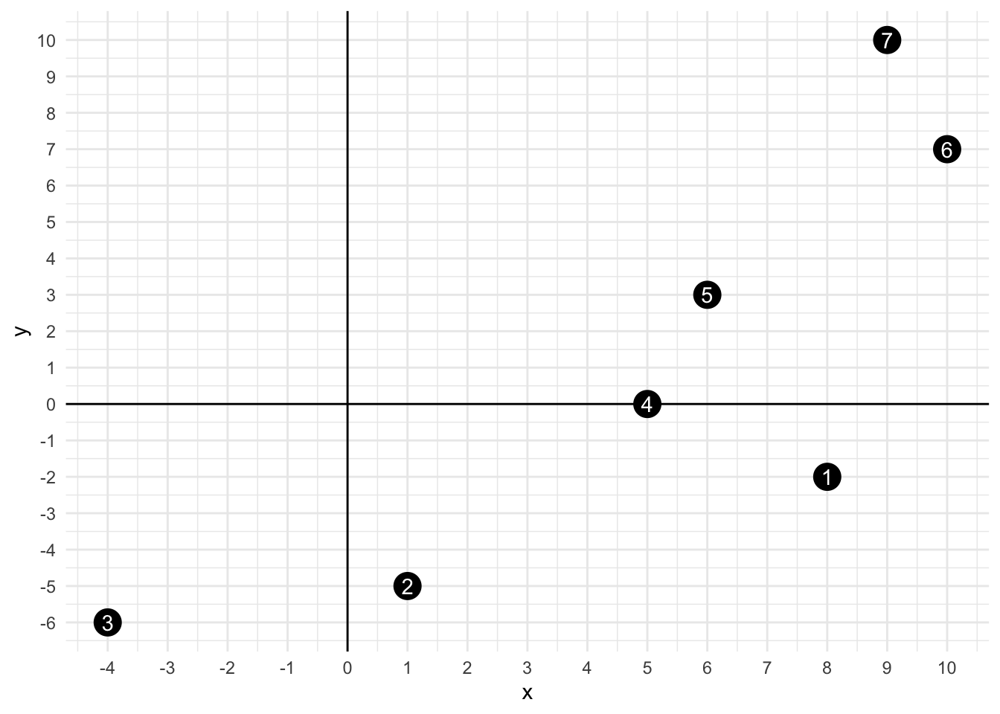
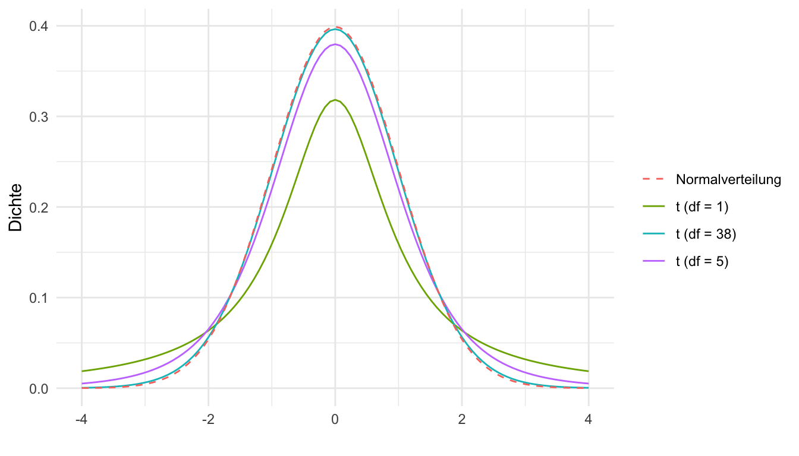
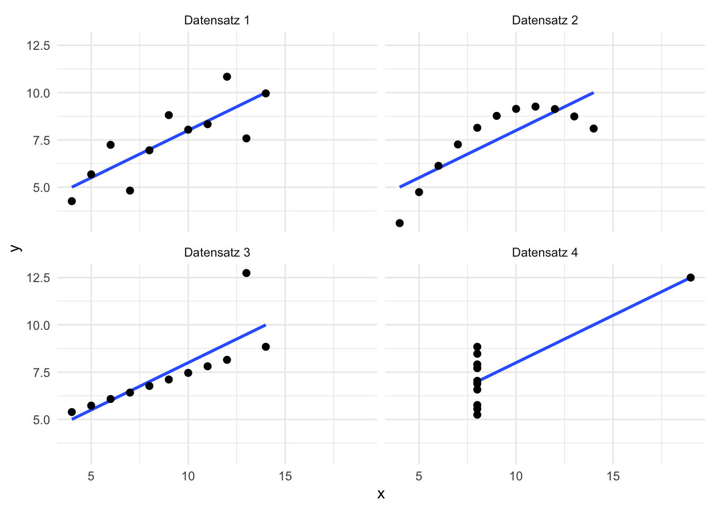
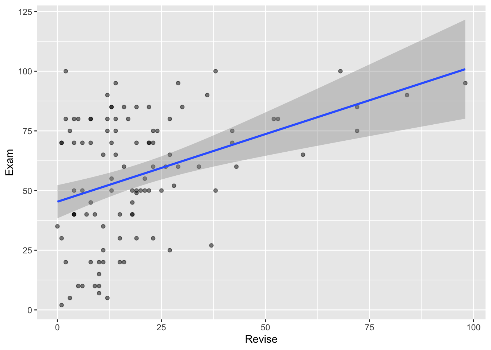
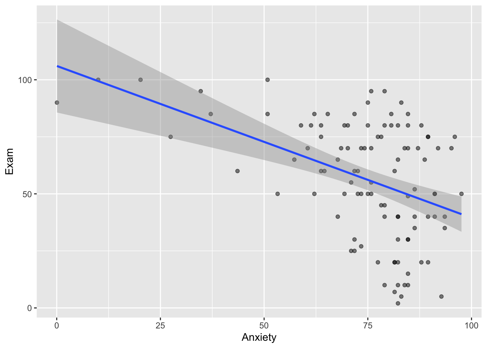
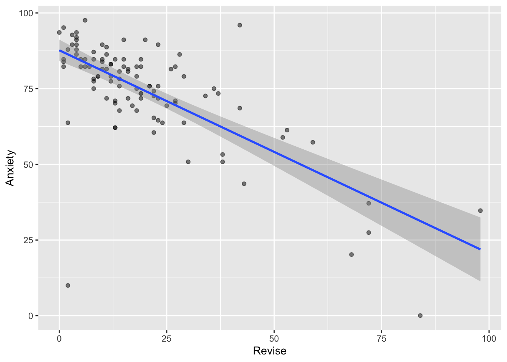
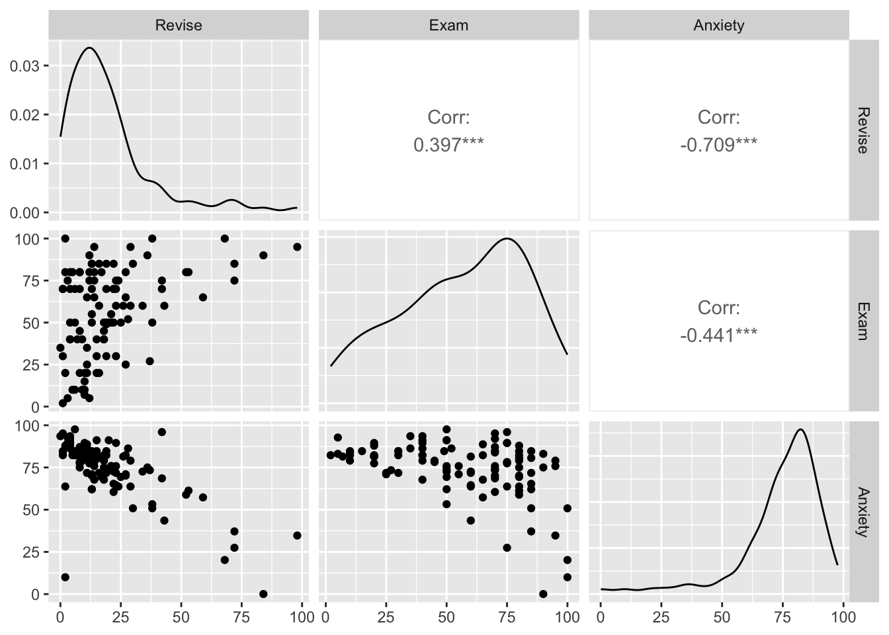

Allgemeines
Oft ist es interessant zu fragen, ob zwei Variablen eine gegenseitige Abhängigkeit zeigen. Man möchte also wissen, ob sich die beiden Größen ähnlich verhalten oder nicht – wenn die eine Variable zunimmt, nimmt dann die andere auch zu? Oder ist es genau umgekehrt und sie nimmt dann immer ab? Die Korrelation ist ein einfaches und populäres Maß, um diese Fragestellungen zu beantworten. Aber gleich vorweg: Korrelationen messen keine kausalen Zusammenhänge, sondern nur die Stärke eines Zusammenhangs zwischen zwei Variablen.
Produkt-Moment-Korrelation (Pearson-Korrelation)
Die Produkt-Moment-Korrelation \(r\) (auch Pearson-Korrelation genannt) ist ein Maß für den Grad des linearen Zusammenhangs zweier intervallskalierter Variablen. Die Korrelation nimmt Werte zwischen −1 und 1 an und wird aus den Varianzen und der Kovarianz beider Variablen berechnet.
Die Varianz einer Variablen \(x\) ist wie folgt definiert:
\[\mathrm{Var}(x) = \frac{1}{N-1} \sum_{i=1}^N (x_i - \bar{x})^2\]
Hier ist \(\bar{x}\) der Mittelwert über alle \(N\) Werte (welche als \(x_i\) bezeichnet werden), also
\[\bar{x} = \frac{1}{N} \sum_{i=1}^N x_i.\]
Alternativ kann man die Varianz auch so schreiben (das Quadrat wird explizit als Multiplikation angeschrieben):
\[\mathrm{Var}(x) = \frac{1}{N-1} \sum_{i=1}^N (x_i - \bar{x})(x_i - \bar{x})\]
Die Varianz beschreibt, wie stark die Datenpunkte um ihren Mittelwert variieren (streuen). Dementsprechend ist die Kovarianz zwischen zwei Variablen \(x\) und \(y\) definiert als
\[\mathrm{Cov}(x, y) = \frac{1}{N-1} \sum_{i=1}^N (x_i - \bar{x})(y_i - \bar{y}).\]
Die Kovarianz beschreibt, wie stark die beiden Variablen gemeinsam um den jeweiligen Mittelwert variieren. Eine positive Kovarianz bedeutet, dass beide Variablen gleichsinnig variieren (d.h. wenn eine Variable größer als ihr Mittelwert ist, dann ist die andere auch größer). Umgekehrt bedeutet eine negative Kovarianz, dass beide Variablen gegensinnig variieren (ist eine Variable größer als ihr Mittelwert, dann ist die andere Variable kleiner).
Die Kovarianz ist kein standardisiertes Maß, d.h. man kann nicht einfach zwei Kovarianzen aus unterschiedlichen Messreihen miteinander vergleichen, da sie von der Skalierung der beiden Variablen abhängt. Die Pearson-Korrelation standardisiert nun die Kovarianz mit den Varianzen der einzelnen Variablen und stellt somit sicher, dass die Korrelation im Wertebereich zwischen −1 und 1 liegt:
\[r = \frac{\mathrm{Cov}(x, y)}{\sqrt{\mathrm{Var}(x) \mathrm{Var}(y)}}\]
Rechenbeispiel
Versuchen wir, die Korrelation mit den Formeln für zwei Beispielvektoren \(x\) und \(y\) zu berechnen:
\[ \begin{aligned} x &= (8, 1, -4, 5, 6, 10, 9) \\ y &= (-2, -5, -6, 0, 3, 7, 10) \end{aligned} \]
Wir können diese sieben Datenpunkte in einem Streudiagramm visualisieren:
Zunächst berechnen wir die beiden Mittelwerte:
\[ \begin{aligned} \bar{x} &= \frac{1}{7} \cdot (8 + 1 - 4 + 5 + 6 + 10 + 9) = 5 \\ \bar{y} &= \frac{1}{7} \cdot (-2 - 5 - 6 + 0 + 3 + 7 + 10) = 1 \end{aligned} \]
Damit können wir die Varianzen berechnen:
\[ \begin{aligned} \text{Var}(x) = \frac{1}{6} \cdot \Bigl[ & (8 - 5)^2 + (1 - 5)^2 + (-4 - 5)^2 \\ &+ (5 - 5)^2 + (6 - 5)^2 + (10 - 5)^2 + (9 - 5)^2 \Bigr] = 24.\dot{6} \\ \text{Var}(y) = \frac{1}{6} \cdot \Bigl[ & (-2 - 1)^2 + (-5 - 1)^2 + (-6 - 1)^2 \\ &+ (0 - 1)^2 + (3 - 1)^2 + (7 - 1)^2 + (10 - 1)^2 \Bigr] = 36 \end{aligned} \]
Schließlich berechnen wir die Kovarianz:
\[ \begin{aligned} \text{Cov}(x, y) = \frac{1}{6} \cdot \Bigl[ & (8 - 5) \cdot (-2 -1) + (1 - 5) \cdot (-5 - 1) \\ &+ (-4 - 5) \cdot (-6 - 1) + (5 - 5) \cdot (0 - 1) \\ &+ (6 - 5) \cdot (3 - 1) + (10 - 5) \cdot (7 - 1) + (9 - 5) \cdot (10 - 1) \Bigr] = 24.\dot{3} \end{aligned} \]
Um die Pearson-Korrelation zu erhalten, müssen wir noch diese Größen laut Formel verarbeiten und erhalten somit:
\[r = \frac{24.\dot{3}}{\sqrt{24.\dot{6} \cdot 36}} \approx 0.8166\]
Signifikanz
Meist wird nach der Berechnung der Korrelation ein Test durchgeführt, welcher prüft, ob die erhaltene Korrelation signifikant von der Nullhypothese (“es existiert keine Korrelation, d.h. die Korrelation ist 0”) abweicht. Für genau diese Nullhypothese lässt sich der Test exakt durchführen: Sind die beiden Variablen bivariat normalverteilt und ist die wahre Korrelation 0, dann folgt die Größe
\[t = \frac{r \sqrt{N - 2}}{\sqrt{1 - r^2}}\]
einer \(t\)-Verteilung mit \(N - 2\) Freiheitsgraden. Man berechnet also aus \(r\) und \(N\) den Wert von \(t\) und bestimmt dann, wie wahrscheinlich ein mindestens so extremer Wert unter dieser Verteilung ist – das ergibt den \(p\)-Wert.
Hinweis
Die \(t\)-Verteilung ist wie die Standardnormalverteilung glockenförmig und symmetrisch um 0, hat aber etwas “schwerere Ränder” (also mehr Wahrscheinlichkeit an den Extremwerten). Ihre Form hängt von einem einzigen Parameter ab, den Freiheitsgraden (df): Je größer df, desto ähnlicher wird sie der Standardnormalverteilung – ab etwa df = 30 sind die beiden kaum noch zu unterscheiden.

Die \(t\)-Verteilung wird uns in Einheit 10 bei der linearen Regression wieder begegnen, dort wird sie zur Beurteilung der Regressionskoeffizienten verwendet.
Hinweis
Der \(p\)-Wert gibt hier die Wahrscheinlichkeit an, ein Ergebnis zu erhalten, das mindestens so extrem ist wie das beobachtete – unter der Annahme, dass die Nullhypothese zutrifft (also dass die Korrelation 0 ist). Bei einer ungerichteten Hypothese zählt dabei der Betrag der Korrelation, d.h. sowohl stark positive als auch stark negative Werte gelten als extrem.
Ein kleiner \(p\)-Wert bedeutet also, dass der beobachtete Wert unter der Nullhypothese sehr unwahrscheinlich ist. Daher entscheidet man sich in solchen Situationen, die Nullhypothese zu verwerfen und die Korrelation als signifikant (unterschiedlich von 0) zu betrachten.
Ein großer \(p\)-Wert ist umgekehrt kein Beleg dafür, dass die Korrelation tatsächlich 0 ist – man kann die Nullhypothese dann lediglich nicht verwerfen.
Die folgende interaktive Grafik veranschaulicht diesen Zusammenhang: Der rote Punkt lässt sich entlang der \(t\)-Achse verschieben und stellt den beobachteten Wert der Teststatistik dar, die blau schattierte Fläche den zugehörigen \(p\)-Wert. Über die Regler können die Freiheitsgrade, ein- oder zweiseitiges Testen sowie (nur bei einseitigem Testen relevant) die Richtung der Alternativhypothese eingestellt werden.
Konfidenzintervall
Der Weg über die \(t\)-Verteilung hilft uns aber nicht weiter, wenn wir zusätzlich ein Konfidenzintervall für \(r\) berechnen wollen, denn dieses muss ja auch Korrelationen ungleich 0 abdecken. Für eine wahre Korrelation ungleich 0 ist die Stichprobenverteilung von \(r\) aber schief (besonders bei Werten nahe −1 oder 1) und daher nicht normalverteilt. Mit der Fisher-Transformation
\[z_r = \frac{1}{2} \ln \frac{1 + r}{1 - r} = \text{arctanh}(r)\]
erhält man jedoch eine Größe, die näherungsweise normalverteilt ist – und zwar mit dem Standardfehler
\[\mathrm{SE}(z_r) = \frac{1}{\sqrt{N - 3}}.\]
Das Konfidenzintervall erhält man, indem man zu \(z_r\) das Produkt aus dem zum Signifikanzniveau gehörenden Quantil der Standardnormalverteilung (ca. 1.96 für \(\alpha = 0.05\)) und dem Standardfehler addiert bzw. subtrahiert. Da diese Grenzen Fisher-transformiert sind, muss man sie abschließend noch mit tanh() (der Umkehrfunktion von atanh()) rücktransformieren.
Wichtig
Im Gegensatz zum \(t\)-Test für den \(p\)-Wert ist das nur eine Näherung – \(z_r\) ist lediglich näherungsweise normalverteilt. Diese Näherung wird mit wachsender Stichprobengröße besser und ist in der Praxis ab etwa \(N = 30\) gut brauchbar.
Hinweis
Das Konfidenzintervall umfasst jene Werte, die mit den beobachteten Daten verträglich (plausibel) sind. Die Konfidenz ist nicht die Wahrscheinlichkeit, dass der wahre Wert in dem berechneten Intervall liegt – denn der wahre Wert ist entweder in dem Intervall oder nicht. Wenn man viele Stichproben erheben und damit jedes Mal ein Konfidenzintervall berechnen würde, dann würde im Falle eines 95%-Konfidenzintervalls in 95% der berechneten Intervalle der wahre Wert in dem Intervall liegen.
Beispiel
Betrachten wir dazu ein Beispiel zur Veranschaulichung der Berechnung des \(p\)-Wertes sowie des Konfidenzintervalls für eine gegebene Pearson-Korrelation. Gegeben sei eine Korrelation \(r = 0.25\) aus einer Stichprobe der Größe \(N = 40\), und wir geben ein Signifikanzniveau von \(\alpha = 0.05\) vor (das ist der Schwellwert, den der \(p\)-Wert unterschreiten muss, damit wir eine Korrelation als signifikant betrachten).
Für den \(p\)-Wert berechnen wir zunächst den Wert der \(t\)-Statistik:
r = 0.25
N = 40
alpha = 0.05
(t = r * sqrt(N - 2) / sqrt(1 - r^2))[1] 1.591645Den \(p\)-Wert erhält man als Wahrscheinlichkeit, in einer \(t\)-Verteilung mit \(N - 2 = 38\) Freiheitsgraden Werte zu erhalten, die betragsmäßig größer sind als \(t \approx 1.59\) (der Faktor 2 wird benötigt, da wir keine gerichtete Hypothese haben und daher beide Enden der Verteilung berücksichtigen müssen):
(p = 2 * pt(-abs(t), df=N - 2))[1] 0.1197504
Hinweis
Das abs() sorgt dafür, dass die Berechnung auch für negative Korrelationen funktioniert. Ohne Betrag (also z.B. 2 * (1 - pt(t, df=N - 2))) würde man für ein negatives \(r\) einen Wert nahe 2 statt eines kleinen \(p\)-Wertes erhalten.
Dieser \(p\)-Wert ist größer als \(\alpha = 0.05\), d.h. wir können die Nullhypothese (keine Korrelation) nicht verwerfen.
Für das Konfidenzintervall brauchen wir die Fisher-Transformation von \(r\) sowie deren Standardfehler:
(z = atanh(r))[1] 0.2554128(se_z = 1 / sqrt(N - 3))[1] 0.164399Damit können wir die Grenzen des Konfidenzintervalls berechnen und rücktransformieren:
cl_z = z - qnorm(1 - alpha/2) * se_z
cu_z = z + qnorm(1 - alpha/2) * se_z
c(cl_z, z, cu_z) # Fisher-transformiert[1] -0.06680328 0.25541281 0.57762891c(tanh(cl_z), r, tanh(cu_z)) # zurücktransformiert[1] -0.06670409 0.25000000 0.52093993
Tipp
Die Tatsache, dass die Korrelation \(r=0.25\) bei einer Stichprobe von \(N=40\) nicht signifikant unterschiedlich von Null ist (\(p=0.12\)) kann man auch daran erkennen, dass das 95%-Konfidenzintervall den Wert 0 (also die Nullhypothese) enthält. Das bedeutet also, dass wir die Nullhypothese (keine Korrelation) nicht verwerfen können.
Voraussetzungen und Fallstricke
Die Pearson-Korrelation ist eine einzelne Zahl, die einen Zusammenhang zwischen zwei Variablen zusammenfasst – und dabei sehr viel Information verwirft. Die folgenden Punkte sollte man daher immer im Hinterkopf behalten:
- \(r\) misst ausschließlich den linearen Anteil eines Zusammenhangs. Ein Wert nahe 0 bedeutet also nicht, dass die Variablen unabhängig sind – ein perfekter, aber U-förmiger Zusammenhang ergibt beispielsweise \(r = 0\).
- \(r\) reagiert empfindlich auf Ausreißer. Ein einziger extremer Datenpunkt kann eine Korrelation erzeugen oder auch verschwinden lassen.
- Der Signifikanztest sowie das Konfidenzintervall setzen voraus, dass die beiden Variablen gemeinsam (bivariat) normalverteilt sind, d.h. im Streudiagramm sollte eine elliptische, zur Mitte hin dichter werdende Punktwolke ohne Ausreißer oder getrennte Cluster erkennbar sein. Eine notwendige (aber nicht hinreichende) Bedingung dafür ist, dass jede der beiden Variablen für sich genommen normalverteilt ist. Unter dieser Voraussetzung ist der \(t\)-Test für den \(p\)-Wert exakt, während das Konfidenzintervall über die Fisher-Transformation weiterhin nur eine Näherung bleibt.
- Wird nur ein eingeschränkter Wertebereich einer Variablen erhoben (z.B. IQ-Werte ausschließlich von Studierenden), fällt \(r\) systematisch zu klein aus.
- Signifikanz ist nicht dasselbe wie Relevanz: Bei sehr großen Stichproben wird auch eine praktisch bedeutungslose Korrelation signifikant (siehe Übung 1).
- Eine Korrelation über eine gemischte Stichprobe kann in jeder einzelnen Untergruppe ganz anders (bis hin zu umgekehrt) aussehen – das in Einheit 8 gezeigte Simpsons Paradoxon (siehe Übung 5).
Der wichtigste Ratschlag lautet daher: Man sollte die Daten immer auch in einem Streudiagramm betrachten und sich nie allein auf den Korrelationskoeffizienten verlassen. Das klassische Beispiel dafür ist das sogenannte Anscombe-Quartett – vier Datensätze, die in R als anscombe verfügbar sind. Alle vier weisen (auf drei Nachkommastellen gerundet) dieselbe Korrelation \(r = 0.816\) auf und haben zudem identische Mittelwerte und Varianzen – trotzdem sehen sie völlig unterschiedlich aus:

Nicht-parametrische Korrelationskoeffizienten
Spearman Rangkorrelationskoeffizient
Im Gegensatz zur Pearson-Korrelation misst der Spearman Rangkorrelationskoeffizient \(\rho\) nicht nur lineare Zusammenhänge zwischen zwei Variablen, sondern der Zusammenhang kann eine beliebige monotone (nicht-lineare) Funktion sein. Die beiden Variablen müssen auch nicht intervallskaliert sein, d.h. so kann man auch ordinalskalierte Daten miteinander korrelieren.
Im Prinzip berechnet man die Spearman-Korrelation, indem man die Daten \(x\) und \(y\) vorher in Ränge konvertiert und dann die Pearson-Korrelation berechnet.
Kendall Rangkorrelationskoeffizient
Bei kleinen Stichproben und relativ großer Anzahl an Bindungen (gleiche Ränge) liefert oft der Kendall Rangkorrelationskoeffizient \(\tau\) bessere Ergebnisse. Hier werden nicht die Abstände zwischen den Rängen betrachtet, sondern es wird jedes Paar von Beobachtungen daraufhin verglichen, ob es konkordant oder diskordant ist. Konkordant bedeutet, dass die beiden Beobachtungen in beiden Variablen in dieselbe Richtung geordnet sind (das Paar mit dem größeren \(x\) hat auch das größere \(y\)), diskordant bedeutet, dass die Ordnung in den beiden Variablen entgegengesetzt ist. Der Koeffizient \(\tau\) ergibt sich im Wesentlichen aus der Differenz zwischen der Anzahl konkordanter und diskordanter Paare, dividiert durch die Gesamtzahl der Paare.
Hinweis
Weil \(\tau\) und \(\rho\) unterschiedlich definiert sind, sind sie auch nicht direkt vergleichbar – für dieselben Daten ist \(\tau\) üblicherweise deutlich kleiner als \(\rho\). Beide Koeffizienten sind aber, im Gegensatz zur Pearson-Korrelation, robust gegenüber Ausreißern.
Korrelationen mit R berechnen
Korrelationskoeffizienten kann man mit den folgenden drei Funktionen berechnen: cor(), cor.test() und rcorr(). Die ersten beiden Funktionen sind Teil von R, die Funktion rcorr() muss mit dem Hmisc-Paket geladen werden.
library(Hmisc)Die drei Funktionen haben unterschiedliche Features, d.h. welche Funktion man benutzt ist abhängig von den benötigten Eigenschaften, welche in nachfolgender Tabelle zusammengefasst sind (“CI” steht für Konfidenzintervall, “Mehrfach” bedeutet, dass Korrelationen zwischen mehr als zwei Variablen paarweise berechnet werden können).
| Pearson | Spearman | Kendall | \(p\)-Werte | CI | Mehrfach | |
|---|---|---|---|---|---|---|
cor |
x | x | x | x | ||
cor.test |
x | x | x | x | x | |
rcorr |
x | x | x | x |
Hinweis
Ein Konfidenzintervall liefert cor.test() nur für die Pearson-Korrelation. Für Spearman und Kendall gibt die Funktion zwar einen \(p\)-Wert aus, aber kein Intervall.
Funktion cor()
Die Funktion cor() ruft man wie folgt auf:
cor(x, y, method="pearson")Hier übergibt man zwei Vektoren und spezifiziert, welche Korrelation berechnet werden soll (standardmäßig wird die Pearson-Korrelation berechnet). Wenn x ein Data Frame mit mindestens zwei Spalten ist, kann man y weglassen – dann werden automatisch die Korrelationen zwischen allen Spaltenpaaren berechnet.
Funktion cor.test()
Der Aufruf der Funktion cor.test() ist sehr ähnlich:
cor.test(x, y, alternative="two.sided", method="pearson", conf.level=0.95)Hier kann man die Form der Alternativhypothese ("two.sided", "greater", "less") sowie das Konfidenzniveau angeben. Diese Funktion kann nur mit genau zwei Vektoren umgehen.
Hinweis
Für die Pearson-Korrelation rechnet cor.test() genau wie weiter oben beschrieben: Der \(p\)-Wert wird über die \(t\)-Statistik bestimmt (daher stehen in der Ausgabe t und df), das Konfidenzintervall über die Fisher-Transformation.
Funktion rcorr()
Die Funktion rcorr() verwendet man wie folgt:
rcorr(x, y, type="pearson")Wie bei den anderen Funktionen sind x und y Vektoren. Weiters ist es wie bei cor() möglich, nur das Argument x anzugeben, wenn dieses eine Matrix mit mindestens zwei Spalten ist.
Beispiel
Am besten können die drei Funktionen anhand eines Beispiels veranschaulicht werden. Dazu laden wir einen (fiktiven) Datensatz exam.dat über Prüfungsangst:
library(readr)
(exam = read_tsv("exam.dat"))# A tibble: 103 × 5
Code Revise Exam Anxiety Gender
<dbl> <dbl> <dbl> <dbl> <chr>
1 1 4 40 86.3 Male
2 2 11 65 88.7 Female
3 3 27 80 70.2 Male
4 4 53 80 61.3 Male
5 5 4 40 89.5 Male
6 6 22 70 60.5 Female
7 7 16 20 81.5 Female
8 8 21 55 75.8 Female
9 9 25 50 69.4 Female
10 10 18 40 82.3 Female
# ℹ 93 more rowsEs ist hilfreich, die Daten zuerst einmal grafisch darzustellen. Für den Zusammenhang zwischen zwei Variablen bietet sich ein Streudiagramm (inklusive Regressionsgeraden) an – so kann man die Korrelation direkt visualisieren. Wir können eine solche Grafik zunächst einmal separat für alle drei Kombinationen erzeugen:
library(ggplot2)
ggplot(exam, aes(x=Revise, y=Exam)) +
geom_point(alpha=0.5) +
geom_smooth(method="lm")
ggplot(exam, aes(x=Anxiety, y=Exam)) +
geom_point(alpha=0.5) +
geom_smooth(method="lm")
ggplot(exam, aes(x=Revise, y=Anxiety)) +
geom_point(alpha=0.5) +
geom_smooth(method="lm")
Tipp
Bei mehreren Variablen (wie in diesem Beispiel) kann man mit der Funktion ggpairs() alle paarweisen Streudiagramme gleichzeitig darstellen. Diese Funktion ist Teil des Pakets GGally, einer auf ggplot2 aufbauenden Erweiterung, welche zuvor einmalig installiert werden muss. Man übergibt der Funktion einfach die gewünschten Spalten:
library(GGally)
ggpairs(exam[, 2:4])
Diese Matrix zeigt in der unteren Hälfte die Streudiagramme aller Variablenpaare, in der Diagonale die Verteilung der einzelnen Variablen und in der oberen Hälfte bereits die zugehörigen Pearson-Korrelationen. Damit bekommt man mit einem einzigen Aufruf einen sehr guten Überblick über die Daten.
Pearson-Korrelation
Nun berechnen wir die Pearson-Korrelationen zwischen den drei Variablen Exam, Anxiety und Revise:
cor(exam[, c("Exam", "Anxiety", "Revise")]) Exam Anxiety Revise
Exam 1.0000000 -0.4409934 0.3967207
Anxiety -0.4409934 1.0000000 -0.7092493
Revise 0.3967207 -0.7092493 1.0000000Man kann aus dieser Korrelationsmatrix direkt die einzelnen Koeffizienten für alle Variablenpaare ablesen. Die Diagonale beinhaltet die Korrelationen der Variablen mit sich selbst und besteht daher aus lauter Werten, die exakt gleich 1 sind. Außerdem ist es egal, ob man die Korrelationen in dem Dreieck unter der Diagonale oder über der Diagonale abliest, da die Korrelationsmatrix symmetrisch ist: Die Korrelation zwischen “Exam” und “Revise” ist dieselbe wie zwischen “Revise” und “Exam” (die Kovarianz in der Formel ändert sich nicht, wenn man \(x\) und \(y\) vertauscht). Genau deshalb kann eine Korrelation auch nie eine Richtung und damit keine Kausalität abbilden.
Inhaltlich lässt sich die Matrix so lesen: Wer mehr lernt, erzielt tendenziell ein besseres Prüfungsergebnis (\(r = 0.4\)), wer ängstlicher ist, ein schlechteres (\(r = -0.44\)), und mehr Lernen geht mit deutlich geringerer Prüfungsangst einher (\(r = -0.71\)).
Möchte man jedoch auch \(p\)-Werte, muss man die Funktion rcorr() verwenden. Diese Funktion erwartet die Daten jedoch nicht als Data Frame, sondern als Matrix. Daher müssen die Daten beim Aufruf der Funktion mit as.matrix() in eine Matrix umgewandelt werden:
rcorr(as.matrix(exam[, c("Exam", "Anxiety", "Revise")])) Exam Anxiety Revise
Exam 1.00 -0.44 0.40
Anxiety -0.44 1.00 -0.71
Revise 0.40 -0.71 1.00
n= 103
P
Exam Anxiety Revise
Exam 0 0
Anxiety 0 0
Revise 0 0 Zusätzlich zur Korrelationsmatrix bekommt man auch die \(p\)-Werte geliefert. In diesem Beispiel sind alle Korrelationen signifikant, da die \(p\)-Werte sehr klein sind (gerundet Null).
Wichtig
Bei mehreren Variablen wird hier eine ganze Reihe von paarweisen Tests gleichzeitig durchgeführt (bei drei Variablen sind es drei Tests, bei zehn Variablen bereits 45). Damit steigt die Wahrscheinlichkeit, rein zufällig ein signifikantes Ergebnis zu erhalten, deutlich an. Möchte man solche Korrelationsmatrizen konfirmatorisch interpretieren, sollte man die \(p\)-Werte für multiples Testen korrigieren (z.B. mit p.adjust()).
Hinweis
Enthalten die Daten fehlende Werte (NA), gehen die beiden Funktionen unterschiedlich damit um: rcorr() verwendet für jedes Variablenpaar automatisch alle vollständigen Paare, während cor() standardmäßig NA zurückgibt. Bei cor() muss man daher explizit angeben, wie fehlende Werte behandelt werden sollen (z.B. mit use="complete.obs" oder use="pairwise.complete.obs").
Wenn man auch Konfidenzintervalle benötigt, muss man die Funktion cor.test() verwenden. Diese Funktion unterstützt aber nur zwei Variablen, d.h. bei mehreren Variablen muss man die Funktion mehrmals aufrufen, um alle paarweisen Korrelationen zu erhalten.
cor.test(exam[["Anxiety"]], exam[["Exam"]])
Pearson's product-moment correlation
data: exam[["Anxiety"]] and exam[["Exam"]]
t = -4.938, df = 101, p-value = 3.128e-06
alternative hypothesis: true correlation is not equal to 0
95 percent confidence interval:
-0.5846244 -0.2705591
sample estimates:
cor
-0.4409934 Die Korrelation zwischen Prüfungsangst und Prüfungsergebnis beträgt also \(r = -0.44\) mit einem 95%-Konfidenzintervall von \([-0.58, -0.27]\). Dieses Intervall enthält den Wert 0 nicht, was konsistent zum sehr kleinen \(p\)-Wert ist.
Bestimmtheitsmaß \(R^2\)
Wenn man den Korrelationskoeffizienten \(r\) quadriert, erhält man das Bestimmtheitsmaß \(R^2\). Es gibt den Anteil der Varianz einer Variablen an, der durch die zweite Variable erklärt werden kann, und liegt daher immer zwischen 0 und 1. Es ist üblich, die Korrelation mit dem Kleinbuchstaben \(r\) zu bezeichnen, für das Bestimmtheitsmaß verwendet man aber einen Großbuchstaben \(R^2\).
\[R^2 = r^2\]
cor(exam[, c("Exam", "Anxiety", "Revise")])^2 Exam Anxiety Revise
Exam 1.0000000 0.1944752 0.1573873
Anxiety 0.1944752 1.0000000 0.5030345
Revise 0.1573873 0.5030345 1.0000000Die Prüfungsangst erklärt also rund 19% der Varianz des Prüfungsergebnisses (und umgekehrt – das Bestimmtheitsmaß ist genauso symmetrisch wie die Korrelation und sagt daher ebenfalls nichts über die Wirkrichtung aus). Auffällig ist außerdem, dass \(R^2\) deutlich kleiner ist als \(r\): Eine auf den ersten Blick “mittlere” Korrelation von \(-0.44\) lässt also immer noch rund 81% der Varianz unerklärt.
Spearman Rangkorrelationskoeffizient
Für die Beispieldaten können wir analog auch die Spearman-Korrelation bestimmen:
cor(exam[, c("Exam", "Anxiety", "Revise")], method="spearman") Exam Anxiety Revise
Exam 1.0000000 -0.4046141 0.3498948
Anxiety -0.4046141 1.0000000 -0.6219694
Revise 0.3498948 -0.6219694 1.0000000rcorr(as.matrix(exam[, c("Exam", "Anxiety", "Revise")]), type="spearman") Exam Anxiety Revise
Exam 1.00 -0.40 0.35
Anxiety -0.40 1.00 -0.62
Revise 0.35 -0.62 1.00
n= 103
P
Exam Anxiety Revise
Exam 0e+00 3e-04
Anxiety 0e+00 0e+00
Revise 3e-04 0e+00 cor.test(exam[["Revise"]], exam[["Exam"]], method="spearman")Warning in cor.test.default(exam[["Revise"]], exam[["Exam"]], method = "spearman"): cannot compute exact p-value with
ties
Spearman's rank correlation rho
data: exam[["Revise"]] and exam[["Exam"]]
S = 118387, p-value = 0.0002913
alternative hypothesis: true rho is not equal to 0
sample estimates:
rho
0.3498948 Die Spearman-Korrelation zwischen Revise und Exam ist mit \(\rho = 0.35\) etwas kleiner als die entsprechende Pearson-Korrelation (\(r = 0.4\)). Das ist ein Hinweis darauf, dass der Zusammenhang nicht rein linear ist bzw. dass einzelne Ausreißer die Pearson-Korrelation beeinflussen.
Kendall Rangkorrelationskoeffizient
Die Funktion cor.test() gibt im vorigen Beispiel eine Warnung aus, dass der berechnete \(p\)-Wert nicht exakt ist, da die Daten gleiche Ränge (Bindungen) beinhalten. Der exakte Test für Spearman setzt nämlich voraus, dass alle Ränge eindeutig sind; R weicht daher automatisch auf eine Näherung aus. In solchen Fällen ist der Kendall-Korrelationskoeffizient die bessere Wahl, da dessen Variante \(\tau_b\) Bindungen bereits in der Definition berücksichtigt:
cor.test(exam[["Revise"]], exam[["Exam"]], method="kendall")
Kendall's rank correlation tau
data: exam[["Revise"]] and exam[["Exam"]]
z = 3.8034, p-value = 0.0001427
alternative hypothesis: true tau is not equal to 0
sample estimates:
tau
0.2633259 Der Wert \(\tau = 0.26\) liegt wie erwartet unter \(\rho = 0.35\), die inhaltliche Aussage (ein signifikanter positiver Zusammenhang) ist aber dieselbe.
Übungen
Übung 1
Im theoretischen Teil der Übung haben wir in einem Beispiel die Signifikanz einer Korrelation \(r = 0.25\) bei einer Stichprobengröße von \(N = 40\) berechnet. Diese war mit \(p = 0.12\) nicht signifikant.
- Welche Stichprobengröße \(N\) müssten Sie mindestens wählen, um ein mit \(\alpha = 0.05\) signifikantes Ergebnis zu erhalten?
- Ab welcher Stichprobengröße wird sogar eine sehr kleine Korrelation von \(r = 0.05\) signifikant?
Sie können dieses Beispiel durch Probieren lösen, indem Sie die Stichprobengröße schrittweise verändern (vergrößern) und sich den zugehörigen \(p\)-Wert ausrechnen.
Übung 2
In dieser Einheit haben wir die Korrelation zwischen \(x = (8, 1, -4, 5, 6, 10, 9)^T\) und \(y = (-2, -5, -6, 0, 3, 7, 10)^T\) händisch berechnet. Berechnen Sie nun mit Hilfe von R die Pearson-Korrelation zwischen \(x\) und \(y\). Geben Sie außerdem das 99%-Konfidenzintervall sowie den \(p\)-Wert an! Ist diese Korrelation signifikant bei einem Signifikanzniveau von \(\alpha = 0.01\)?
Übung 3
Verwenden Sie die Beispieldaten mtcars und analysieren Sie den Zusammenhang zwischen den Variablen mpg, disp und hp. Stellen Sie den Zusammenhang zwischen den Variablenpaaren grafisch dar, und berechnen Sie danach Pearson- und Spearman-Korrelationen!
Übung 4
In der Datei pm10.csv finden Sie die monatlichen Feinstaubwerte PM10 von zwei Messstationen in Graz im Zeitraum Februar 2006 bis Mai 2016. Führen Sie folgende Analysen durch:
- Erstellen Sie eine Grafik, in der Sie den Verlauf der PM10-Konzentration von beiden Messstationen über die Zeit darstellen.
- Erstellen Sie eine Grafik, in der Sie den Zusammenhang zwischen den beiden Messstationen darstellen.
Berechnen Sie abschließend die Pearson-Korrelation zwischen den Daten beider Messstationen inklusive Konfidenzintervall sowie \(p\)-Wert. Wie viel Varianz der einen Variable kann durch die andere Variable erklärt werden?
Hinweis
Wandeln Sie die Spalte Datum nach dem Einlesen in einen Datums-Typ um. Für die gleichzeitige Darstellung der beiden Zeitverläufe können Sie zwei geom_line()-Schichten übereinanderlegen (eine pro Messstation). Übergibt man dabei innerhalb von aes() einen fixen Text als color, entsteht daraus automatisch die passende Legende (z.B. aes(y=Petersgasse, color="Petersgasse")).
Wenn Sie die Funktion cor() zur Berechnung der Korrelation zwischen den beiden Variablen verwenden möchten, können Sie fehlende Werte in jeder der beiden Variablen mit dem Argument use="complete.obs" ausschließen.
Übung 5
Berechnen Sie die Korrelation der Schnabellänge (bill_len) mit der Schnabeltiefe (bill_dep) im Datensatz penguins. Berechnen Sie außerdem diese Korrelation für jede Spezies separat! Was stellen Sie fest?
Hinweis
Für die gruppierte Berechnung können Sie group_by() und summarize() aus dem Paket dplyr verwenden. Ein Blick auf die entsprechenden Streudiagramme aus Einheit 8 hilft bei der Interpretation.
Lösungen
Die Lösungen zu diesen Übungen finden Sie hier.